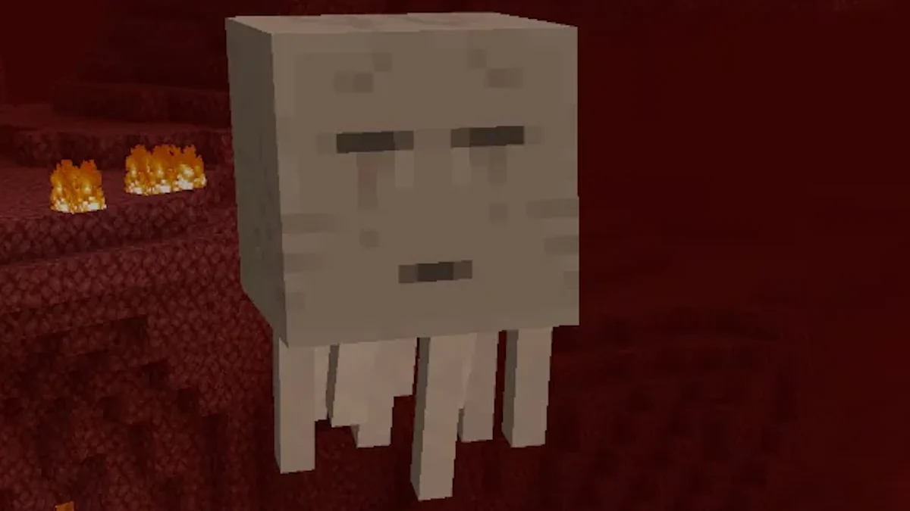

segredo dos nomes "Dinnerbone" e "Grumm"
Se você usar uma etiqueta de nome (Name Tag) e batizar qualquer criatura do jogo como "Dinnerbone" ou "Grumm" (com as iniciais maiúsculas), o animal ou monstro vai ficar completamente de cabeça para baixo. Isso funciona até com o Dragão do End!

O nome original era bem sem graça
A história do nome Minecraft reflete a própria evolução do jogo: de um experimento rústico ao jogo mais vendido da história. Em maio de 2009, o criador Markus "Notch" Persson batizou o protótipo inicial de Cave Game (Jogo de Caverna), um título puramente funcional para um mundo que só tinha pedra e grama. Semanas depois, buscando uma identidade mais comercial e inspirada em RPGs, Notch mudou o nome para Minecraft: Order of the Stone (A Ordem da Pedra), uma homenagem à webcomic The Order of the Stick. No entanto, percebendo que o subtítulo era pretensioso e limitava a liberdade do jogador, ele decidiu simplificar. O nome final surgiu da junção direta das duas mecânicas centrais do jogo: Mine (minerar) e Craft (construir). Essa escolha acabou sendo um golpe de mestre de marketing, pois criou uma marca curta, universal e sonora que explica perfeitamente a dinâmica do jogo sem a necessidade de tradução em nenhum lugar do mundo.

Os sons do Ghast vêm de um gato dormindo
Sabe aqueles guinchos e choros assustadores que os Ghasts dão no Nether? Eles não foram feitos em um sintetizador de terror. O designer de som do jogo, Daniel "C418" Rosenfeld, gravou o áudio do seu próprio gato de estimação acordando assustado de um cochilo.

Ovelha RGB (nametag de nome "Jeb_")
Outra curiosidade envolvendo nomes envolve as ovelhas. Se você nomear uma ovelha como "jeb_" (com a linha decorativa abaixo), a lã dela começará a mudar de cor continuamente, passando por todas as cores do arco-íris de forma suave.